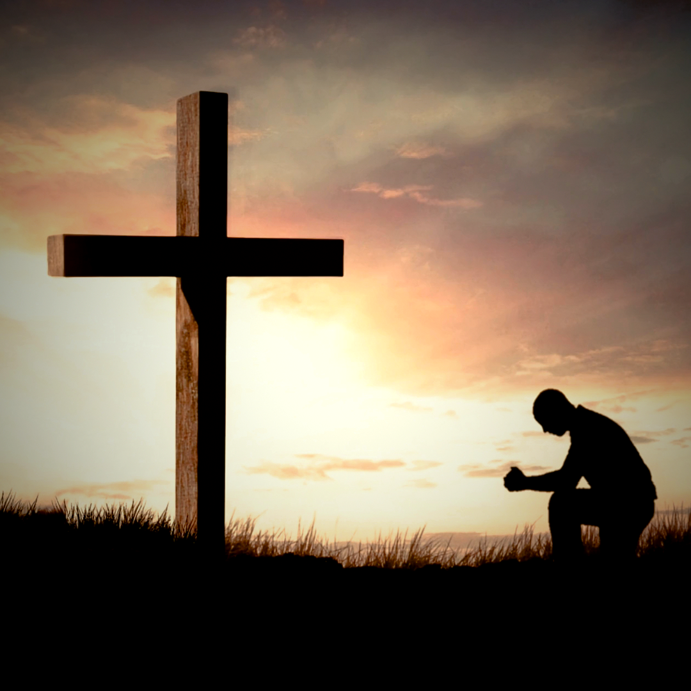

6
Salmos 51:17 app
⬇ Baixar vídeo“Os sacrifícios para Deus são o espírito quebrantado; a um coração quebrantado e contrito não desprezarás, ó Deus.” — Salmos 51:17 #versiculododia #biblia #fe #salmos #perdao

“Os sacrifícios para Deus são o espírito quebrantado; a um coração quebrantado e contrito não desprezarás, ó Deus.” — Salmos 51:17 #versiculododia #biblia #fe #salmos #perdao
“Pois todos nós devemos comparecer perante o tribunal de Cristo, para que cada um receba de acordo com as obras praticadas por meio do corpo, quer sejam boas quer sejam más.” — 2 Coríntios 5:10 #versiculododia #biblia #fe #corintios #vidacrista
“O Senhor te abençoe e te guarde; O Senhor faça resplandecer o seu rosto sobre ti, e tenha misericórdia de ti; O Senhor sobre ti levante o seu rosto e te dê a paz.” — Números 6:24-26 #versiculododia #biblia #fe #numeros #bencao
“Eis que venho em breve! A minha recompensa está comigo, e eu retribuirei a cada um de acordo com o que fez.” — Apocalipse 22:12 #versiculododia #biblia #fe #apocalipse #voltadejesus
“Não matarás.” — Êxodo 20:13 #versiculododia #biblia #fe #exodo #dezmandamentos
“Àquele que não conheceu pecado, o fez pecado por nós; para que nele fôssemos feitos justiça de Deus.” — 2 Coríntios 5:21 #versiculododia #biblia #fe #corintios #graca
“E nós conhecemos, e cremos no amor que Deus nos tem. Deus é amor; e quem está em amor está em Deus, e Deus nele.” — 1 João 4:16 #versiculododia #biblia #fe #joao #deuseamor
“Aquele que crê no Filho tem a vida eterna; mas aquele que não crê no Filho não verá a vida, mas a ira de Deus sobre ele permanece.” — João 3:36 #versiculododia #biblia #fe #joao #vidaeterna
“Portanto tomai toda a armadura de Deus, para que possais resistir no dia mau e, havendo feito tudo, permanecer firmes.” — Efésios 6:13 #versiculododia #biblia #fe #efesios #armaduradedeus
“O Senhor é o meu pastor; nada me faltará.” — Salmos 23:1 #versiculododia #biblia #fe #salmos #bompastor
“Lâmpada para os meus pés é a tua palavra, e luz para o meu caminho.” — Salmos 119:105 #versiculododia #biblia #fe #salmos #direcao
“Não temas, porque eu sou contigo; não te assombres, porque eu sou teu Deus; eu te fortaleço, e te ajudo, e te sustento com a destra da minha justiça.” — Isaías 41:10 #versiculododia #biblia #fe #isaias #naotemas
“Vinde a mim, todos os que estais cansados e oprimidos, e eu vos aliviarei.” — Mateus 11:28 #versiculododia #biblia #fe #mateus #descanso
“E sabemos que todas as coisas concorrem para o bem daqueles que amam a Deus, daqueles que são chamados segundo o seu propósito.” — Romanos 8:28 #versiculododia #biblia #fe #romanos #proposito
“Posso todas as coisas naquele que me fortalece.” — Filipenses 4:13 #versiculododia #biblia #fe #filipenses #forcaemcristo
“Confia no Senhor de todo o teu coração, e não te estribes no teu próprio entendimento. Reconhece-o em todos os teus caminhos, e ele endireitará as tuas veredas.” — Provérbios 3:5-6 #versiculododia #biblia #fe #proverbios #confianca
“Pois eu bem sei os planos que estou projetando para vós, diz o Senhor; planos de paz, e não de mal, para vos dar um futuro e uma esperança.” — Jeremias 29:11 #versiculododia #biblia #fe #jeremias #esperanca
Hoje é sábado, 14 de novembro 🙏 “Este é o dia que o Senhor fez; regozijemo-nos, e alegremo-nos nele.” — Salmos 118:24 Comente AMÉM pra receber essa oração no seu dia. 🎵 Hoje É 14 de Novembro (feito com Suno) #14denovembro #oracaododia #musicagospel #fe #bomdia
Quem me conheceu no fundo não reconhece agora. 🙏 “Também me tirou duma cova de destruição, dum charco de lodo; pôs os meus pés sobre uma rocha.” — Salmos 40:2 Comente ELE ME TIROU se você também tem um testemunho. 🎵 Do Lodo Na Rocha (feito com Suno) #testemunho #trapgospel #musicagospel #fe #salmo40
Não é tarde demais pra quem volta pra casa. 🙏 “Assim vos restituirei os anos que foram consumidos…” — Joel 2:25 Comente RESTITUI, SENHOR se você crê na restauração. 🎵 O Pai Me Erguerá (feito com Suno) #restauracao #trapgospel #musicagospel #fe #joel
Hoje eu não vim pedir nada. Hoje eu vim só agradecer. 🙏 Levanta a mão aí onde você está e comenta: OBRIGADO, SENHOR. 🎵 Obrigado, Senhor (feito com Suno) #gratidao #obrigadosenhor #musicagospel #fe #aindadepe
Aquele atraso, aquela porta fechada, aquela viagem que não deu certo… você chamou de azar. O céu chama de livramento. 🙏 Comente ELE ME GUARDOU se você também tem um livramento pra contar. 🎵 Ele Me Guardou (feito com Suno) #livramento #deusmeguardou #musicagospel #fe #aindadepe
O dia acabou. E você ainda tá aqui. 🌙🙏 No fim do dia, só gratidão. Antes de dormir, comente: OBRIGADO. 🎵 Só Gratidão (feito com Suno) #gratidao #boanoite #musicagospel #fe #aindadepe
Nenhum vídeo na fila. Tudo postado! 🙌
Se o download abrir o vídeo em vez de baixar: toque e segure no vídeo → Baixar/Salvar.
"Já postei": com a chave do GitHub conectada, apaga o vídeo do site para sempre (~1 min), sem login — no modo anônimo, abra o site pelo link favorito com a chave.
Sem a chave, só esconde o vídeo neste navegador (no modo anônimo, volta ao fechar a aba).
⚙ Conectar ao GitHub